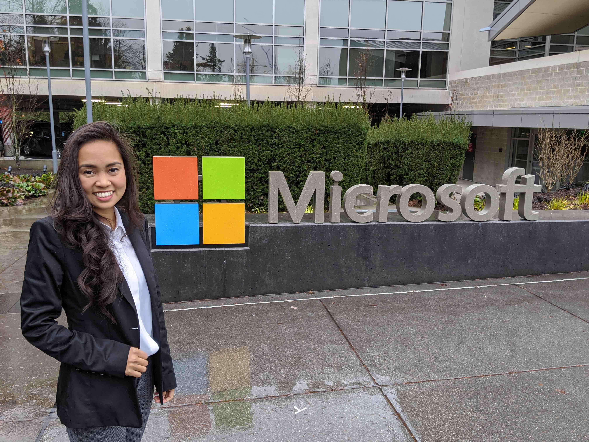

Me excited to be interviewed on a rainy Seattle day.
I am happy to announce that I got interviewed for Microsoft last month and I’ll start working for them… not anytime soon. Yep, that’s right! I didn’t make the final cut.
Why I’m still happy? Because few who were in the same boat as me, did. They were bootcamp graduates who were finally given a big break as UX Designers. These are highly capable individuals who, in their own time and using their personal resources, decided to invest in their professional growth through an alternative route of learning. Most of them started from non-design backgrounds but later realized that design is what they truly want.
One of the biggest challenges I’m constantly running into as a career shifter is the doubt of the legitimacy of the training I got from a bootcamp. While I acknowledge that not all bootcamps are created equal and that the training I got wasn’t perfect, what is? My bachelor’s degree training isn’t perfect either but it was good enough for me to pass both Philiipine and US Nursing Board exams, and to literally save lives.
Kudos to Microsoft for acknowledging the legitimacy of bootcamps and for running an apprenticeship program specifically designed for their graduates. I hope more organizations will follow suit.
 The UX Designers who got in the January 2020 program - the first UX Design cohort in Microsoft HQ. Photo credits: Microsoft Leap
The UX Designers who got in the January 2020 program - the first UX Design cohort in Microsoft HQ. Photo credits: Microsoft Leap
Another reason why I’m happy? I’m happy because I failed forward. Not counting staffing agencies and an informational interview with Facebook, my Microsoft interview was technically my first job interview on my quest for a UX Designer position, and my first ever since I moved to US. It was a great experience! The recruiters were helpful, the interviewers were warm and professional, and my co-applicants (despite knowing were fighting for the same positions) were friendly and supportive.
Yes, I was disappointed I wasn’t chosen but I’m still really grateful for the experience. Failure is such an underrated event. I think it should be celebrated more. Success stories are so much more meaningful when we highlight the failures.